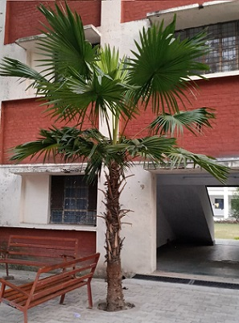

Windmill Palm
Scientific name = Trachycarpus fortunei
Growing to 12-20 m (39-66 ft) tall, Trachycarpus fortunei is a single stemmed fan palm. The diameter of the trunk is up to 15-30 cm (6-12 in). Its
texture is very rough, with the persistent leaf bases clasping the stem as layers of coarse fibrous material. The leaves have long petioles which are
bare except for two rows of small spines, terminating in a rounded fan of numerous leaflets. Each leaf is 140-190 cm (55-75 in) long, with the petiole 60-100
cm (24-39 in) long, and the leaflets up to 90 cm (35 in) long. It is a somewhat variable plant, especially as regards its general appearance; and
some specimens are to be seen with leaf segments having straight and others having drooping tips.